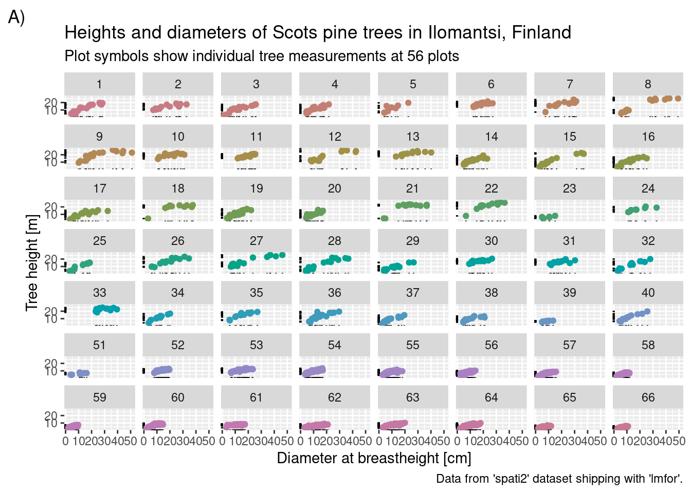

Introduction to R: Session 02 (ggplot version)
June 5, 2024 (Version 0.1)
All contents are licensed under CC BY-NC-ND 4.0.
Data preparations
We use the ddply function implemented in the plyr (Wickham 2011) add-on package (we will introduce ddply and the ‘split-apply-combine’ strategy in a bit more detail in Session 05).
library("plyr")
d_breaks_cut <- quantile(df$d, probs = seq(0, 1, by = 0.05))
df$d_cut <- cut(df$d, breaks = d_breaks_cut, include.lowest = TRUE)
dd <- ddply(df, c("d_cut"), summarise,
h_mean = mean(h),
h_q25 = quantile(h, probs = 0.25),
h_q75 = quantile(h, probs = 0.75))
dd$d_lb <- d_breaks_cut[-length(d_breaks_cut)]
dd$d_ub <- d_breaks_cut[-1]
dd$d_mean <- apply(dd[, c("d_lb", "d_ub")], MAR = 1, FUN = mean)1 Store graphics
File format:
pdf(): ‘portable document format’jpeg(): ‘joint photographic experts group’tiff(): ‘tagged image file format’png(): ‘portable network graphics’- …
Options:
width: width (forpdfin inches)height: height (forpdfin inches)onefile: logical value (should several graphics as separate pages in one file?)- …
Usage:
2 ggplot (Wickham 2016) basics
Books:
From R Graphics Cookbook, Section Some terminology and theory
- “The data is what we want to visualize. It consists of variables, which are stored as columns in a data frame.
- Geoms are the geometric objects that are drawn to represent the data, such as bars, lines, and points.
- Aesthetic attributes, or aesthetics, are visual properties of geoms, such as x and y position, line color, point shapes, etc.
- There are mappings from data values to aesthetics.
- Scales control the mapping from the values in the data space to values in the aesthetic space. A continuous y scale maps larger numerical values to vertically higher positions in space.
- Guides show the viewer how to map the visual properties back to the data space. The most commonly used guides are the tick marks and labels on an axis.”
ggplot2 requirement: data must be organised in data frames!
The syntax of the ggplot2 package differs from that of base R, and in order to create a visualization of your data using ggplot2, you need to specify three key components:
- data,
- aesthetics, and
- geometry (
geoms).
From ?aes:
“Aesthetic mappings describe how variables in the data are mapped to visual properties (aesthetics) of geoms. Aesthetic mappings can be set in ggplot() and in individual layers.”
Visual properties of geoms that are constant are set outside of aes (illustrated later)!
We always begin with defining a plotting object using a ggplot(data = ...) call:.

This indicates the (main) data set we will be using.
Often, you might want to plot two variables (of course, there are is situations where you might want to specify only one, or three, or even more variables), one on the x-axis and one on the y-axis. Such an aim is known as positional aesthetics and added to the ggplot() call using aes(x = var1, y = var2), where aes() stands for aesthetics.
… no data is plotted yet, however the stage is prepared.
So we need a third key component, which is a geometry short geom …
… where we can also shift the aesthetics to:

Note: The data is specified outside of aes(), while the variables that ggplot maps to aesthetics are added inside aes().
3 Most important geoms
3.1 One continuous variable
3.1.1 Histogram
## `stat_bin()` using `bins = 30`. Pick better value with `binwidth`.3.1.3 Kernel density estimation
In combination with a histogram:
## `stat_bin()` using `bins = 30`. Pick better value with `binwidth`.
## Layer by layer (order of geoms matters):
ggplot(data = df, aes(x = d)) +
geom_density() +
geom_histogram(aes(y = after_stat(density)))## `stat_bin()` using `bins = 30`. Pick better value with `binwidth`.

4 Colors with colorspace (Stauffer et al. 2009)
Rather then starting somewhere different, start at the colorspace:
Remember from R Graphics Cookbook, Section Some terminology and theory
- Scales control the mapping from the values in the data space to values in the aesthetic space. A continuous y scale maps larger numerical values to vertically higher positions in space.
library("colorspace")
ggplot(data = df, aes(x = d, y = h)) +
geom_rug() +
geom_bin_2d() +
scale_fill_continuous_divergingx(pal = "Earth")ggplot(data = df, aes(x = d, y = h)) +
geom_rug() +
geom_density_2d(aes(color=after_stat(level))) +
scale_color_continuous_sequential(pal = "ag_GrnYl", rev = F)
5 Titles
Titles are axis labels, but also main title and subtitle (as well as caption and tag).
They are configured using function labs:
ggplot(data = df, aes(x = d, y = h)) +
geom_rug() +
geom_point(aes(color = as.factor(plot))) +
labs(x = "Diameter at breastheight [cm]",
y = "Tree height [m]",
title = "Heights and diameters of Scots pine trees in Ilomantsi, Finland",
subtitle = "Plot symbols show individual tree measurements at 56 plots",
caption = "Data from 'spati2' dataset shipping with 'lmfor'.",
tag = "A)") +
scale_color_discrete_qualitative(pal = "Dark 2") +
theme(legend.position = "none")6 Facetting
Conditional on categorical grouping variable(s), facet_wrap and facet_grid provide functionality to for conditional subplots:
ggplot(data = df, aes(x = d, y = h)) +
geom_rug() +
geom_point(aes(color = as.factor(plot))) +
facet_wrap(~ plot) +
labs(x = "Diameter at breastheight [cm]",
y = "Tree height [m]",
title = "Heights and diameters of Scots pine trees in Ilomantsi, Finland",
subtitle = "Plot symbols show individual tree measurements at 56 plots",
caption = "Data from 'spati2' dataset shipping with 'lmfor'.",
tag = "A)") +
scale_color_discrete_qualitative(pal = "Dark 2") +
theme(legend.position = "none")
ggplot(data = subset(df, (plot < 6) & (d > 15)),
aes(x = d, y = h)) +
geom_rug() +
geom_point(aes(color = as.factor(plot))) +
facet_grid(row = vars(plot), cols = vars(d_cut)) +
labs(x = "Diameter at breastheight [cm]",
y = "Tree height [m]",
title = "Heights and diameters of Scots pine trees in Ilomantsi, Finland",
subtitle = "Plot symbols show individual tree measurements at 56 plots",
caption = "Data from 'spati2' dataset shipping with 'lmfor'.",
tag = "A)") +
scale_color_discrete_qualitative(pal = "Dark 2") +
theme(legend.position = "none")7 Axes
Manipulate axis range in three different ways:
## Warning: Removed 1005 rows containing missing values or values outside the scale range
## (`geom_point()`).See ?scale_continuous for transformations of axis:
## Log-log plot:
ggplot(data = df, aes(x = d, y = h)) +
geom_point() +
scale_x_log10() +
scale_y_log10()frost$bud_burst_doy <- as.numeric(strftime(as.Date(frost$bud_burst), format = "%j"))
frost$end_1st_dev_stage_doy <- as.numeric(strftime(as.Date(frost$end_1st_dev_stage), format = "%j"))
foo <- function(x) {
x <- as.Date(x, origin = as.Date("2024-01-01"))
Sys.setlocale(locale = "en_US.UTF-8")
lab <- months(x)
Sys.setlocale(locale = "de_DE.UTF-8")
return(paste0(lab, ", 1st"))
}
## Apply function for axis labels:
p1 <- ggplot(data = frost, aes(x = bud_burst_doy, y = end_1st_dev_stage_doy)) +
geom_point(aes(color = year)) +
scale_x_continuous(# name = "time",
breaks = as.numeric(strftime(as.Date(paste0("2024-0", 4:7, "-01")), format = "%j")),
minor_breaks = NULL,
labels = foo,
limits = as.numeric(strftime(as.Date(paste0("2024-0", c(4, 7), "-01")), format = "%j"))) +
scale_y_continuous(# name = "time",
breaks = as.numeric(strftime(as.Date(paste0("2024-0", 4:7, "-01")), format = "%j")),
minor_breaks = NULL,
labels = foo,
limits = as.numeric(strftime(as.Date(paste0("2024-0", c(4, 7), "-01")), format = "%j"))) +
labs(y = "End of 1st development stage", x = "Bud burst") +
scale_color_continuous_sequential(pal = "Rocket", begin = .1)
p18 ggrepel (Slowikowski 2024)
library("ggrepel")
p2 <- ggplot(data = frost, aes(x = bud_burst_doy, y = end_1st_dev_stage_doy)) +
geom_point(aes(color = year)) +
geom_label_repel(aes(label = year, color = year), min.segment.length = 0) +
labs(y = "End of 1st development stage [day of year]", x = "Bud burst [day of year]") +
scale_color_continuous_sequential(pal = "Rocket", begin = .1)
p2## Warning: ggrepel: 46 unlabeled data points (too many overlaps). Consider
## increasing max.overlaps9 cowplot (Wilke 2024)
library("cowplot")
guide_box_top <- get_plot_component(p1 +
labs(color = "Year:") +
theme(legend.position = "top"), pattern = "guide-box-top")
plot_grid(guide_box_top,
plot_grid(p1 + theme(legend.position = "none"), p2 + theme(legend.position = "none"), ncol = 2),
nrow = 2, rel_heights = c(.1, .9))## Warning: ggrepel: 63 unlabeled data points (too many overlaps). Consider
## increasing max.overlapsReferences
Private webpage: uncertaintree.github.io↩︎